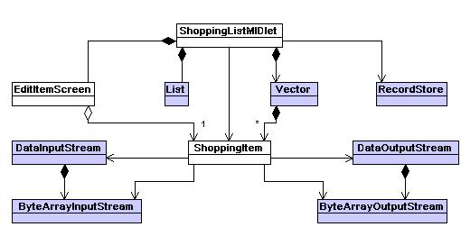
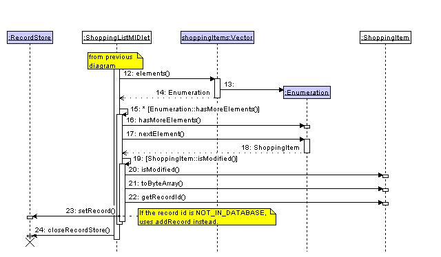

| Example Applications |
|
|
|
This document provides a brief overview of UML class diagrams and sequence diagrams, which are used in the example documentation. It is intended to help readers who have not met UML before to understand the examples.
|
|
|
HelloWorldPlus
This is the class diagram for the HelloWorldPlus example. Note that two styles of arrowhead are used.
Colours System-supplied classes are coloured with a purple background, developer-supplied classes have a white background. This colour scheme is specific to this documentation. Inheritance The hollow closed arrowhead on the link from HelloWorldPlusMIDlet to MIDlet denotes that HelloWorldPlusMIDlet is a subclass of MIDlet. This arrowhead is also used to denote implementation of an interface. Dependancy The link from HelloWorldPlusMIDlet to Display denotes an association. The open arrowhead denotes that this is one-way. HelloWorldPlusMIDlet depends on Display, but Display does not depend on HelloWorldPlusMIDlet. Without the arrowhead, both classes would depend on each other. Ownership A TextEditor is an integral part of a HelloWorldPlusMIDlet, as shown by the filled diamond at the HelloWorldPlusMIDlet end of the link between them. Every instance of HelloWorldPlusMIDlet owns an instance of TextEditor; and when the HelloWorldPlusMIDlet becomes a candidate for garbage collection, so will the TextEditor. Ownership, one-way association Each TextEditor owns an instance of TextField, as shown by the diamond on the link between them. Additionally, the arrowhead denotes that this is a one-way association. Shopping List
This is the class diagram for the Shopping List example, which uses additional notation.

Use The ShoppingListMIDlet uses the RecordStore class (denoted by the link), but does not own an instance of it (no diamond). The RecordStore class itself has no knowledge of the ShoppingListMIDlet class (this is denoted by the arrowhead). Ownership of multiple instances The Vector owns zero or more ShoppingItems, as denoted by the asterisk next to this link.
|
|
|
HelloWorldPlus
This is the sequence diagram for the sequence of actions when the HelloWorldPlus example is launched. A written explanation of the sequence follows it in the HelloWorld documentation.
Left to right order There is no significance to the left-to-right ordering of these diagrams. Top to bottom order Execution starts at the top, and proceeds to the bottom. Vertical lines The vertical lines represent a class, instance or system framework, named at the top. These terms are explained in the following two definitions, and the ShoppingListMIDlet explanation below. Framework The Framework represents the JVM, Symbian OS, and events generated by the user. Class instances created during the sequence When an instance of the class is created during this sequence, the vertical line headed by the name appears at the point in the sequence that creates it. Function calls Each of the arrows except number 2 represent a function call. The vertical rectangles on the class lines show the duration of the function call Conditional execution In this documentation, the contents of a conditional block are represented as a function call, with the necessary condition in square brackets as the name of the pseudo-function. Action number 2 represents the start of an if statement, which continues to action 9. This notation is specific to this documentation. Shopping List
This sequence diagram, from the Shopping List example, uses additional notation. There are two diagrams for this sequence, hence this diagram starts at action 12.

Notes Occassionally it is useful to add additional notes to the diagram - these are shown as yellow rectangles, with a dotted line to the event that they describe. Class instances existing at the start of the sequence If an instance exists at the start of this sequence, the name appears at the top of the diagram. Class providing only static methods (not shown) The same notation for instances existing at the start of the sequence is used in this documentation for classes that provide only static methods. This treats them as an object that has existed before this sequence, and continues to exist after it. Named instances The diagrams generally refer to instances of classes without quoting the variable name used to hold the object. In this diagram, the instance of Vector being used is explictly identified as "shoppingItems". Explict returns from function calls The return from a function is normally left as implied. Action 14 explictly depicts the return value of the function called at action 12. Iteration In this documentation, the contents of while block are represented as a function call, with the necessary condition preceeded by "*[" and followed by "]". Action numbers 15 and 16 represent the start of such a block, which continues to action 23. hasMoreElements() is called once per iteration. This notation is specific to this documentation. Destruction The X mark at the bottom of RecordStore represents explictly calling a destructor. In these Java™ examples, they are also used to represent all references to the object going out of scope, making it a candidate for garbage collection.